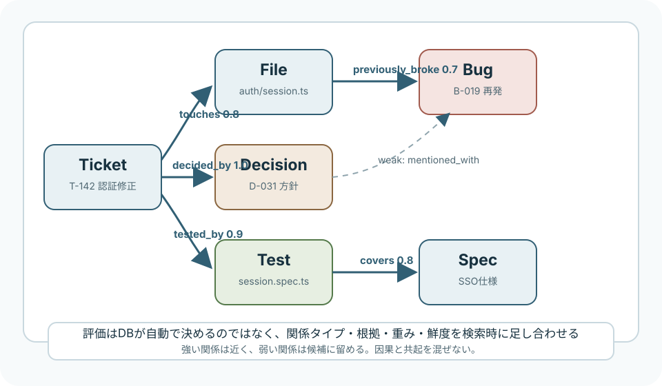

AI / Knowledge Graph
個人開発で使う知識グラフの考え方
知識グラフは、単なる「リレーションで構築された情報集」ではなく、ノード、関係タイプ、根拠、重み、鮮度を使って、後から意味のある経路を取り出すための作業記憶です。
簡潔なQ&A
- Q. グラフ管理とは何を管理することなのか？
- A. ノードだけでなく、関係の種類、方向、根拠、確信度、鮮度、重み、削除や統合の履歴を管理することです。DBは箱で、価値はスキーマと評価ルールにあります。
- Q. 紐付きはどう評価されるのか？
- A. 関係タイプ、根拠の強さ、距離、更新日、利用頻度、明示性を組み合わせて検索時に評価します。グラフDBが自動で「良い紐付き」を決めるわけではありません。
- Q. 個人開発では何から始めるべきか？
- A. チケット、ファイル、意思決定、テスト、バグをノードにし、
touches、decided_by、tested_by、regressed_byのような少数の関係から始めるのがよいです。

リレーション集との違い
現状の理解として「リレーションで構築された情報集」という捉え方はかなり近いです。ただし実務で効くグラフは、単に何かと何かがつながっているだけではありません。重要なのは、その紐付きが「何を意味するのか」「どれくらい信用してよいのか」「いつの時点で有効なのか」「どの根拠から作られたのか」を持つことです。
たとえばTicket A -> File Xという関係だけでは弱いです。これは「そのファイルを読んだ」のか、「変更した」のか、「バグ原因だった」のか、「将来触るべき候補」なのかが分かりません。グラフ管理では、この違いを関係タイプとして分けます。
グラフの基本単位
property graphの世界では、情報は主にノード、エッジ、プロパティで表します。Neo4jの説明でも、ノードはドメイン上の個別オブジェクト、リレーションはノード間の方向つき接続、プロパティはキーと値の情報として扱われます。RDFでは、subject、predicate、objectの三つ組で関係を表します。
| 要素 | 個人開発での例 | 見るべき点 |
|---|---|---|
| Node | Ticket、File、Decision、Bug、Test、Spec | 一意なID、種類、表示名、作成日 |
| Edge | touches、tested_by、caused_by |
方向、関係タイプ、根拠、確信度 |
| Property | confidence、source、created_at |
検索時の評価に使えるメタデータ |
| Path | Ticket -> File -> Bug -> Test | 質問への根拠になる経路 |
グラフ管理で本当にやること
グラフ管理は、グラフDBにデータを入れる作業そのものではありません。むしろ次の四つを継続的に整える作業です。
- スキーマを管理する: どんなノード種別と関係タイプを許すかを決める。
- 名寄せを管理する: 同じものを同じIDに、別物を別IDに保つ。
- 根拠を管理する: 関係がどのチケット、差分、ログ、本文から来たかを残す。
- 評価を管理する: 質問ごとに、どの関係を強く扱い、どれを弱く扱うかを決める。
このうち一番ピンと来にくいのが評価です。ここは「DBが自動で賢く判断する」と考えるとずれます。グラフDBは高速にたどれる箱であって、何を有意義な紐付きと見るかは、スキーマ、重み、クエリ、ランキングの設計で決まります。
紐付きの評価は検索時に決まる
紐付きの評価は、登録時に固定される部分と、検索時に決まる部分に分かれます。登録時には、関係タイプ、根拠、確信度、作成日、作成方法を保存します。検索時には、質問の目的に合わせて、それらを足し合わせたり、弱い関係を除外したりします。
たとえば「このファイルを触る前に読むべき過去チケットは？」という質問では、touches、previously_broke、tested_byは強く、mentioned_withは弱く扱います。一方、「関連しそうな背景を広く見たい」なら、弱い関係も候補として残します。
score =
relation_weight
* confidence
* recency_boost
* evidence_quality
/ path_length_penaltyこれは厳密な公式ではなく、設計の考え方です。関係タイプの重要度、抽出の確信度、新しさ、根拠の質、経路の長さを使って、答えに使う順番を決めます。ベクトル検索のスコアと違って、理由を説明しやすいのがグラフ評価の良さです。
加点方式で考える
個人環境では、最初から高度なグラフアルゴリズムを使うより、単純な加点方式が扱いやすいです。関係タイプごとに初期点を決め、根拠や鮮度で補正します。
| 関係タイプ | 意味 | 初期点の例 |
|---|---|---|
caused_by |
原因として明示された | 1.0 |
decided_by |
設計判断の根拠になった | 1.0 |
tested_by |
テストで検証された | 0.9 |
touches |
変更または参照した | 0.7 |
related_to |
関連があるが意味は広い | 0.4 |
mentioned_with |
同じ文脈で出た | 0.2 |
大事なのは、何でもrelated_toに逃がさないことです。related_toは便利ですが、増えすぎると「なんとなく関係ありそう」の海になります。強い関係タイプを少数に絞り、曖昧な関係は低い点で候補に留めるのが扱いやすいです。
有意義な紐付けの条件
有意義な紐付きには、少なくとも三つの条件があります。第一に、関係タイプが具体的であること。第二に、根拠が追えること。第三に、次の行動を変えることです。
たとえば「Ticket AはFile Xに関係する」より、「Ticket AはFile Xを変更した」「Ticket AのバグはFile Xの入力検証漏れで起きた」「Ticket AはTest Yで再発防止された」の方が強いです。後者は、次にFile Xを触るときに読むべきチケットや実行すべきテストを変えます。
逆に、行動を変えない紐付きは記録コストに見合いません。何でも保存するほど賢くなるわけではなく、後で検索したときに判断を助ける関係だけを濃く残す方がよいです。グラフは日記ではなく、未来の検索と判断のための索引です。
個人開発向けの最小スキーマ
チケット駆動でプロダクト開発をしている個人環境なら、最初は次の程度で十分です。
Node types:
Ticket(id, title, status, created_at)
File(path, module, language)
Decision(id, summary, decided_at)
Bug(id, symptom, severity)
Test(name, command)
Spec(id, title, version)
Edge types:
Ticket -touches-> File
Ticket -decided_by-> Decision
Ticket -fixes-> Bug
Bug -caused_by-> File
File -covered_by-> Test
Decision -supersedes-> Decision
Ticket -relates_to-> Ticketこれだけでも、RAGに渡す文脈がかなり変わります。質問に似たメモを拾うだけでなく、「このチケットから2ホップ以内のファイル、テスト、過去バグ、設計判断」をまとめて渡せるようになります。
名寄せは評価の前提
表記ゆれの名寄せは、グラフ評価の前提です。同じものが複数ノードに分かれると、関係が分散してスコアが低くなります。逆に別物を統合すると、関係が濁って誤った経路が出ます。
個人環境では、最初から完全自動化せず、候補を出して人間が確定する形が向いています。たとえばauth、authentication、loginが近い概念として出ても、同じノードにするのか、関連ノードにするのかはプロダクトの文脈で変わります。
名寄せで守るべきルールは単純です。「似ている」は統合理由にしない。「同じIDとして扱っても将来の判断が壊れない」と言えるときだけ統合します。迷う場合は、同一化せずrelated_toやalias_candidateで弱くつなぐ方が安全です。
グラフDBを使う意味
グラフDBを使う意味は、関係を保存すること自体よりも、関係をたどる問い合わせが自然に書けることです。Neo4jのCypherやTinkerPopのGremlinは、ノードから関係をたどる traversal を中心に考えます。これは「JOINを何度も書いて表を結合する」より、関係の経路を考えやすい場面があります。
ただし、個人環境では最初からグラフDBでなくても構いません。SQLiteにnodesとedgesを作るだけでも始められます。グラフDBが欲しくなるのは、2ホップ、3ホップの関係探索や、関係タイプごとのランキング、可視化、中心性の分析を頻繁にやりたくなったときです。
ツール構成の具体案
個人環境では、道具を一度に増やさない方が続きます。おすすめは、記録、保存、検索、可視化、LLM連携を薄く分ける構成です。
| 段階 | ツール候補 | 役割 |
|---|---|---|
| 最小 | Markdown / JSONL + SQLite | チケット、判断、ファイル、関係をローカルで保存する。 |
| 探索 | SQLite + 小さなCLI | 中心ノードから1から2ホップの関連情報を取り出す。 |
| グラフDB | Kuzu または Neo4j | Cypherでパス検索、関係タイプごとの探索、可視化を行う。 |
| 分析 | NetworkX / Neo4j GDS | 中心性、近さ、頻出経路、孤立ノードを調べる。 |
| LLM連携 | Codex skill / MCP / ローカルCLI | 検索したサブグラフをプロンプトに差し込む。 |
Kuzuはアプリに組み込みやすいグラフDB、Neo4jは成熟したサーバー型グラフDBとして考えると選びやすいです。個人の作業記憶なら、まずSQLiteでスキーマと評価ルールを固め、クエリが窮屈になったらKuzuやNeo4jへ移す順番が現実的です。
SQLiteで始める最小実装
最初の実装は、ノード表とエッジ表だけで十分です。SQLiteならリポジトリ内に.graph/knowledge.dbのようなDBを置き、チケット完了時にCLIで追記できます。
CREATE TABLE nodes (
id TEXT PRIMARY KEY,
type TEXT NOT NULL,
title TEXT NOT NULL,
body TEXT,
created_at TEXT NOT NULL,
updated_at TEXT NOT NULL
);
CREATE TABLE edges (
id TEXT PRIMARY KEY,
from_id TEXT NOT NULL,
to_id TEXT NOT NULL,
type TEXT NOT NULL,
confidence REAL NOT NULL DEFAULT 0.7,
evidence TEXT,
source_ref TEXT,
created_at TEXT NOT NULL,
FOREIGN KEY (from_id) REFERENCES nodes(id),
FOREIGN KEY (to_id) REFERENCES nodes(id)
);ここでsource_refには、チケットID、コミットID、ファイルパス、作業ログの行番号などを入れます。あとから「なぜこの関係があるのか」を見返せないエッジは、検索結果に混ざるほど邪魔になります。
スコアリングSQLの例
たとえば、あるファイルに関係するチケットや判断を取り出すなら、関係タイプごとの重みをSQL側で足せます。
SELECT
n.id,
n.type,
n.title,
e.type AS relation_type,
e.evidence,
(
CASE e.type
WHEN 'caused_by' THEN 1.0
WHEN 'decided_by' THEN 1.0
WHEN 'tested_by' THEN 0.9
WHEN 'touches' THEN 0.7
WHEN 'related_to' THEN 0.4
ELSE 0.2
END
* e.confidence
) AS score
FROM edges e
JOIN nodes n ON n.id = e.from_id
WHERE e.to_id = 'file:src/auth/session.ts'
ORDER BY score DESC
LIMIT 20;このクエリは単純ですが、思想としては十分です。強い関係を上位にし、曖昧な関係を下に回します。LLMへ渡すときは、上位の数件だけを根拠として渡す方が、雑多なメモを大量に渡すより安定します。
Neo4jやKuzuに移した場合のCypher例
グラフDBに移すと、パスをそのまま問い合わせられるのが気持ちよくなります。Neo4jのCypherでは、MATCHでグラフの形を指定して、該当するパスを探します。
MATCH path =
(t:Ticket)-[r1:TOUCHES|FIXES|DECIDED_BY]->(x)
-[r2:COVERED_BY|CAUSED_BY|SUPERSEDES*0..2]->(y)
WHERE t.id = 'ticket:T-142'
RETURN path
LIMIT 20;この例では、あるチケットから、変更ファイル、修正したバグ、設計判断を起点に、さらに2ホップ以内の関係を取り出します。SQLでも可能ですが、経路そのものを扱うならCypherの方が読みやすくなります。
チケット完了時の登録フロー
運用は、チケット完了時の短いチェックリストに寄せると続きます。
- 今回の中心チケットを
Ticketノードとして登録する。 - 変更した主要ファイルを
Fileノードとして登録し、touchesでつなぐ。 - 設計判断があれば
Decisionノードにして、decided_byでつなぐ。 - 直した不具合があれば
Bugノードにして、fixesやcaused_byでつなぐ。 - 実行したテストを
Testノードにして、tested_byまたはcovered_byでつなぐ。 - 各エッジに根拠となる差分、ログ、本文、コミットIDを入れる。
大事なのは、毎回完璧なグラフを作ろうとしないことです。チケット完了時に3から5本の強いエッジを残すだけで、数十チケット後にはかなり効く作業記憶になります。
Codexに渡すサブグラフの形
Codexやローカルスキルに渡すときは、DBの生データではなく、短い「根拠パック」に整形します。
Context graph for ticket:T-142
Strong paths:
1. ticket:T-142 -touches(0.8)-> file:src/auth/session.ts
evidence: git diff shows session validation changed
2. file:src/auth/session.ts -previously_broke(0.7)-> bug:B-019
evidence: ticket:T-088 regression note
3. file:src/auth/session.ts -covered_by(0.9)-> test:session.spec.ts
evidence: test added in commit abc123
Instruction:
- Prefer strong paths over loose related_to links.
- Do not infer causation from mentioned_with.
- If a required path is missing, say what node or edge should be added.この形なら、Codexは「関係があるらしい」ではなく、「なぜ読むべきか」「どのテストを気にすべきか」を持って作業できます。スキル改善にも使いやすく、後から「このタスクではどのスキルとどの関係が効いたか」を記録できます。
検索時の使い方
RAGやCodexに渡すときは、グラフ全体を渡すのではなく、質問に合わせた小さなサブグラフを切り出します。
- 質問から中心ノードを決める。例: チケットID、ファイルパス、エラー名。
- 強い関係タイプを優先して1から2ホップたどる。
- 候補パスにスコアを付ける。
- 上位のパスと根拠だけをLLMに渡す。
- LLMには「このパスにない因果は推測扱いにする」と指示する。
この形にすると、グラフは回答の材料であると同時に、回答の制約にもなります。LLMが自由に連想するのではなく、「この根拠パスから言えること」と「推測」を分けやすくなります。
よくある失敗
- 関係タイプが粗すぎる: 何でも
related_toにすると、検索結果が濁る。 - 根拠がない: なぜつないだか不明なエッジは、後で信用できない。
- 自動抽出を信じすぎる: LLMは共起を因果にしてしまうことがある。
- 古い情報を消さない: 仕様変更後も古い判断が同じ強さで残ると誤誘導する。
- 可視化に満足する: きれいな図より、次の検索で使える関係タイプの方が重要。
要点
グラフ管理の肝は、ノードを集めることではなく、関係に意味、根拠、重み、鮮度を持たせることです。個人開発では、チケット、ファイル、意思決定、テスト、バグを少数の明確な関係でつなぎ、検索時にスコアリングして小さなサブグラフとして取り出すところから始めるのが実用的です。